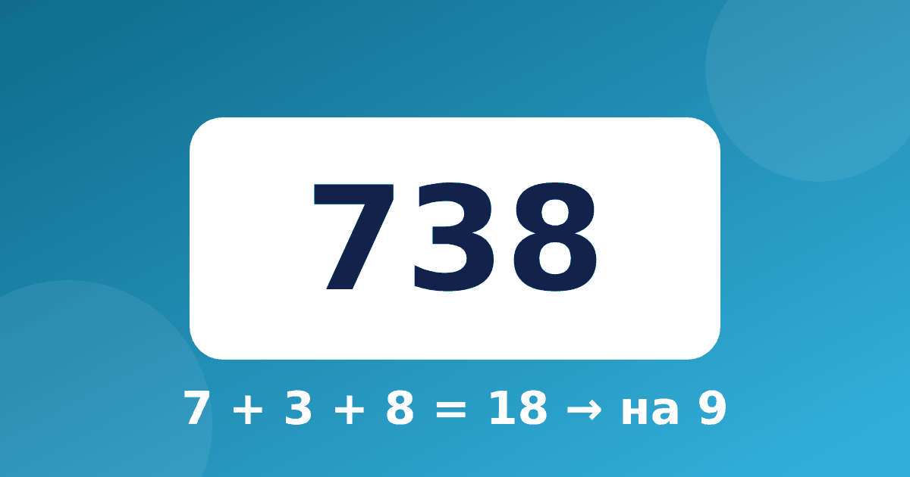

Признаки делимости простыми словами: как узнать, делится ли число, не деля

Признаки делимости — это короткие правила, которые позволяют понять, делится ли число на 2, 3, 5, 9 или 10, не выполняя само деление. Формально их обычно проходят в 5–6 классе, но простые признаки полезно показать раньше, когда ребёнок уверенно владеет таблицей. Объясним их простыми словами и подскажем, как связать с таблицей умножения и проверкой деления.
Признаки делимости на 2, 5 и 10: смотрим на последнюю цифру
Эти три признака самые лёгкие, потому что достаточно взглянуть на последнюю цифру числа.
- На 2 делятся числа, которые оканчиваются на 0, 2, 4, 6 или 8. Например, 134 делится на 2, а 135 нет.
- На 5 делятся числа, которые оканчиваются на 0 или 5. Например, 245 и 300.
- На 10 делятся числа, которые оканчиваются на 0. Например, 470 и 1 000.
Объяснение тоже простое. Когда мы умножаем число на 10, справа появляется ноль, поэтому все такие числа и оканчиваются на 0. Если ребёнок знает умножение на 5 и 10, то признак он, скорее всего, уже замечал сам: ответы в таблице на 5 всегда заканчиваются на 0 или 5.
Признак делимости на 3: считаем сумму цифр
Число делится на 3, если на 3 делится сумма его цифр. Возьмём 123: 1 + 2 + 3 = 6, а 6 делится на 3. Проверяем: 123 : 3 = 41, так как 3 × 41 = 123. Верно.
Теперь число 125: 1 + 2 + 5 = 8, а 8 на 3 не делится. Значит, и 125 на 3 нацело не делится. Для больших чисел сумму можно сокращать дальше. В числе 4 872 сумма цифр 4 + 8 + 7 + 2 = 21, а 21 = 3 × 7, поэтому число делится на 3.
Признак делимости на 9: тот же приём, но с девяткой
Признак делимости на 3 и 9 устроен одинаково: у девятки нужно, чтобы сумма цифр делилась на 9. Возьмём 738: 7 + 3 + 8 = 18, а 18 делится на 9. Проверка: 9 × 82 = 738. Верно.
Число 561 даёт сумму цифр 5 + 6 + 1 = 12. Оно делится на 3, потому что 12 делится на 3, но на 9 не делится, потому что 12 на 9 нацело не делится. Это хороший пример того, чем различаются два признака: всё, что делится на 9, делится и на 3, но не наоборот.
Любопытное совпадение есть в таблице на 9: у каждого ответа сумма цифр равна 9. 9 × 7 = 63, и 6 + 3 = 9. 9 × 4 = 36, и 3 + 6 = 9. Подробнее об этой таблице рассказано в статье таблица умножения на 9.
Почему сумма цифр работает
Для ребёнка достаточно такой мысли: десяток, сотня, тысяча — это «девятки плюс единица». 10 = 9 + 1, 100 = 99 + 1. Поэтому число 23 это два десятка и три единицы, то есть 2 × 9 + 2 + 3. Первое слагаемое делится на 9 само, значит, остаток зависит только от суммы цифр 2 + 3 = 5. И правда, 23 = 18 + 5.
Строгое доказательство ребёнку не нужно. Подробнее о связи действий рассказано в статье про деление как обратное умножение. Достаточно один раз показать этот пример, чтобы правило не казалось магическим.
Как признаки связаны с таблицей и проверкой деления
Признак помогает быстро оценить, возможно ли деление без остатка. Ребёнок решил 156 : 3 и получил 52. Проверка: сумма цифр 1 + 5 + 6 = 12 делится на 3, значит, деление без остатка возможно, и ответ вполне правдоподобен. Подтверждаем умножением: 3 × 52 = 156.
Если же признак показывает, что число не делится, пример скорее всего надо решать с остатком. Эта тема разобрана в статье деление с остатком в 3 классе.
Сводные правила закрепляются в игре: назовите число и попросите ребёнка угадать, на что оно делится. Например, 54: чётное, значит, делится на 2; 5 + 4 = 9, значит, делится на 3 и на 9; вместе это даёт делимость на 6, и правда, 54 : 6 = 9.
Чтобы признаки не повисли в воздухе, ребёнку нужна уверенная таблица. Тренировать её можно в тренажёре «Умножение»: там есть деление и итоговая проверка, а часть блоков доступна бесплатно.
Частые вопросы
В каком классе проходят признаки делимости?
Чаще всего в 5–6 классе, но сроки зависят от программы. Простые признаки на 2, 5 и 10 можно показать уже в начальной школе.
Как быстро проверить, делится ли число на 3?
Сложите все его цифры и посмотрите, делится ли сумма на 3. Если сумма большая, сложите её цифры ещё раз.
Нужно ли заучивать признаки наизусть?
Нет, достаточно понять их на нескольких примерах. Со временем ребёнок запомнит правила сам, особенно если пользоваться ими в играх и при проверке деления.
Признаки делимости хороши тем, что превращают таблицу умножения из набора ответов в систему с закономерностями. Таблицу и деление удобно повторять по статье про умножение и деление в 3 классе. Для следующего шага попросите ребёнка самого придумать большое число, которое делится на 9, и проверить его суммой цифр. Если таблица ещё хромает, вернитесь в тренажёр «Умножение».